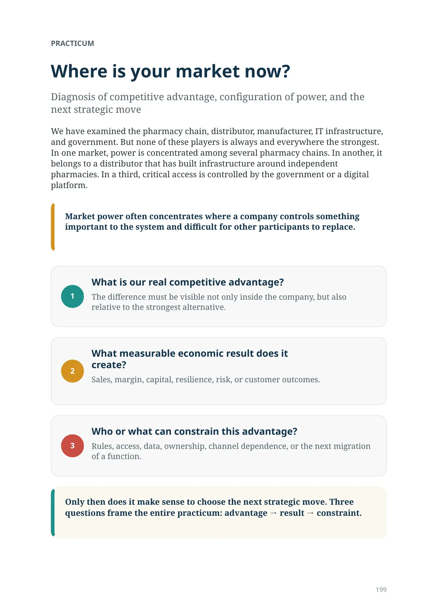
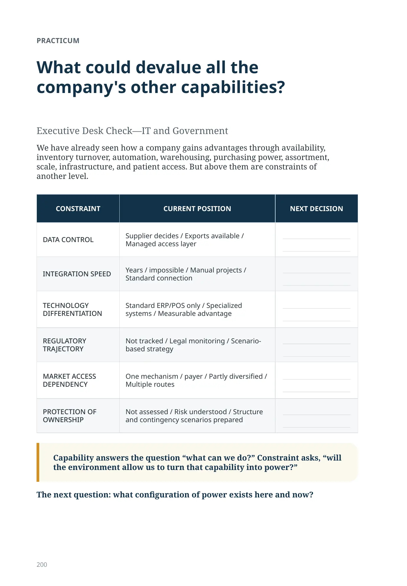
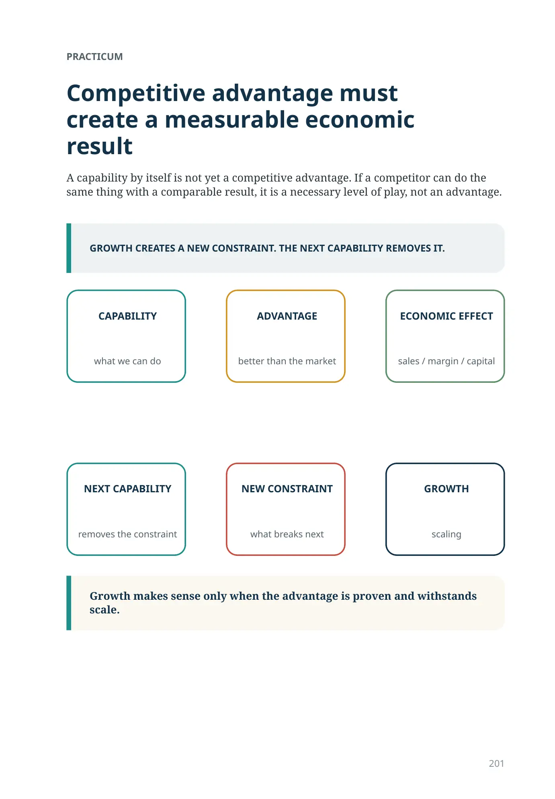
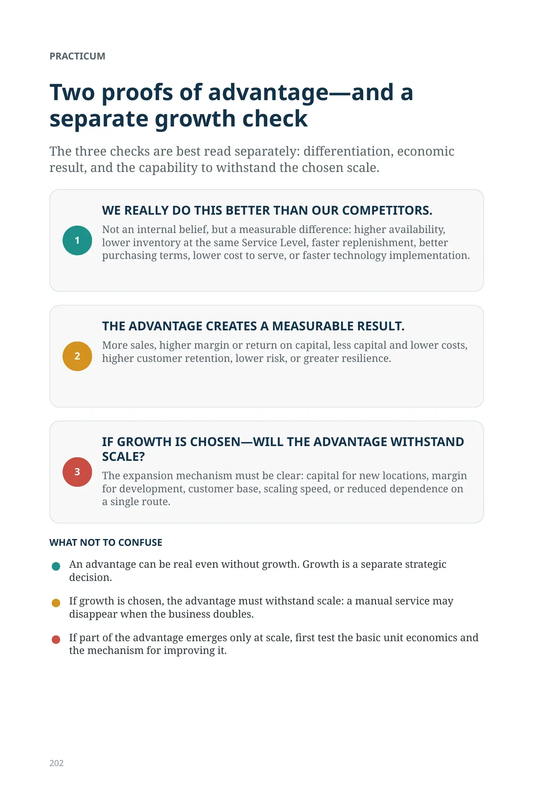
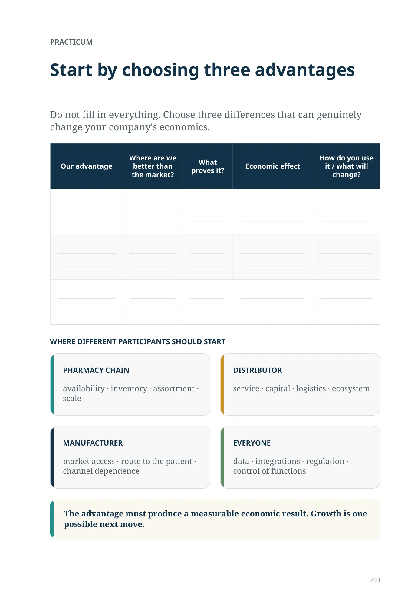
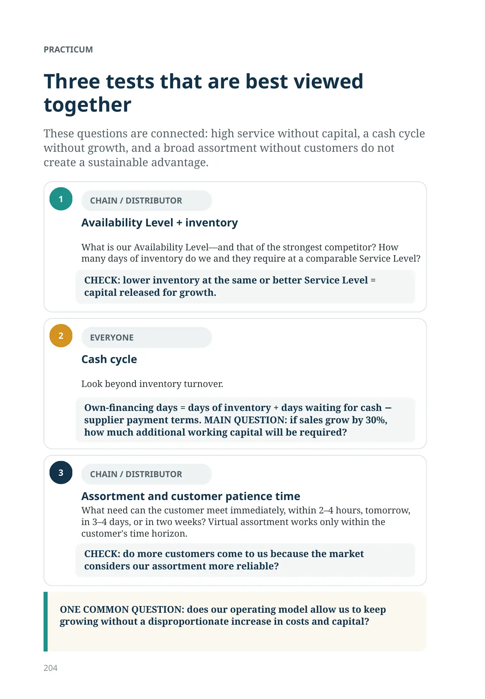
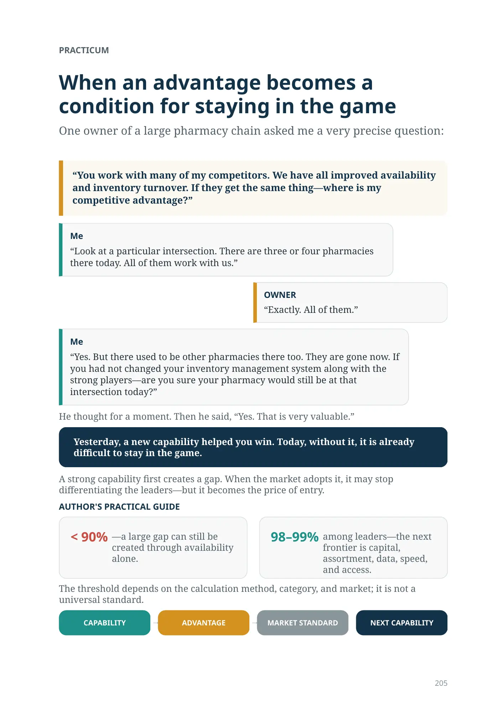
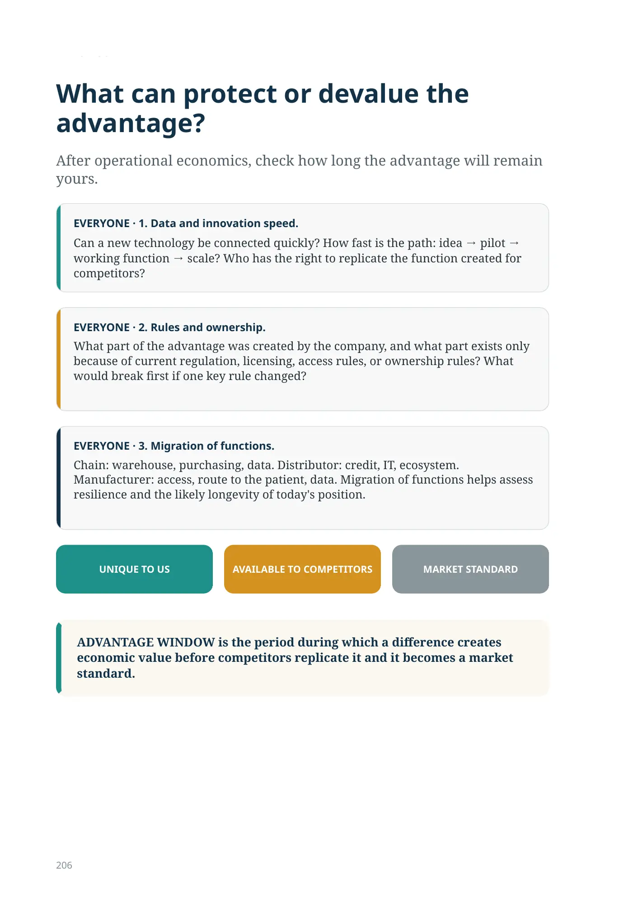
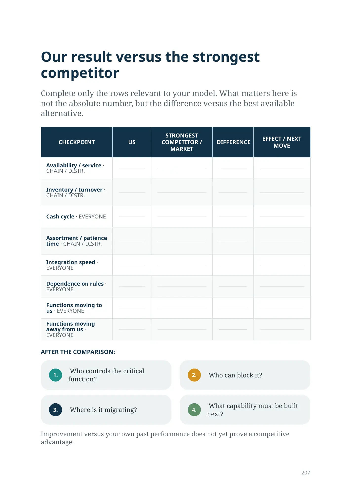
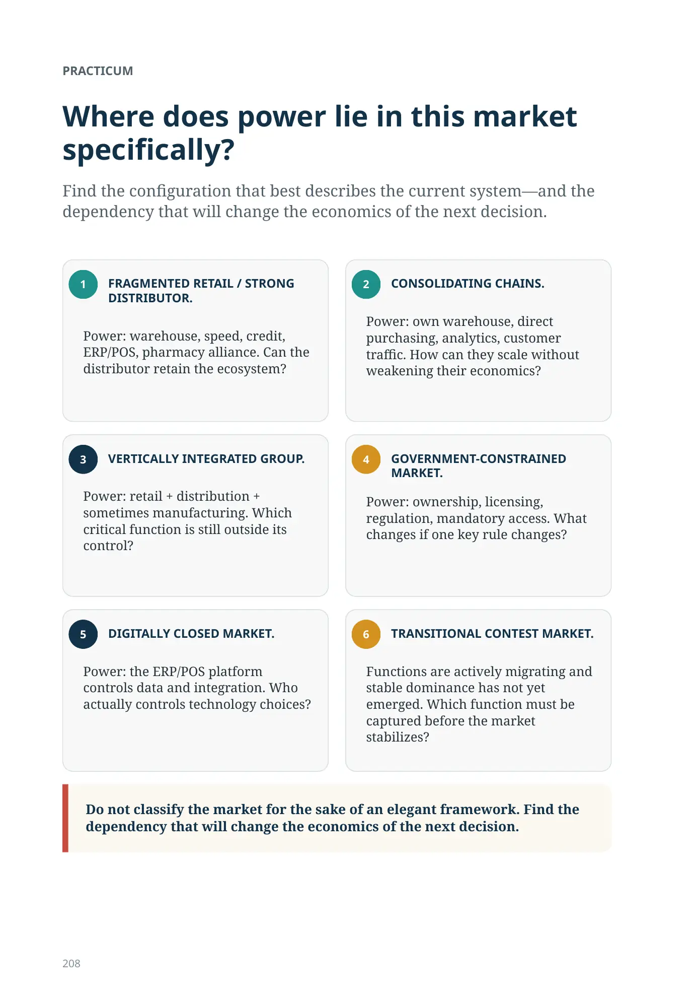
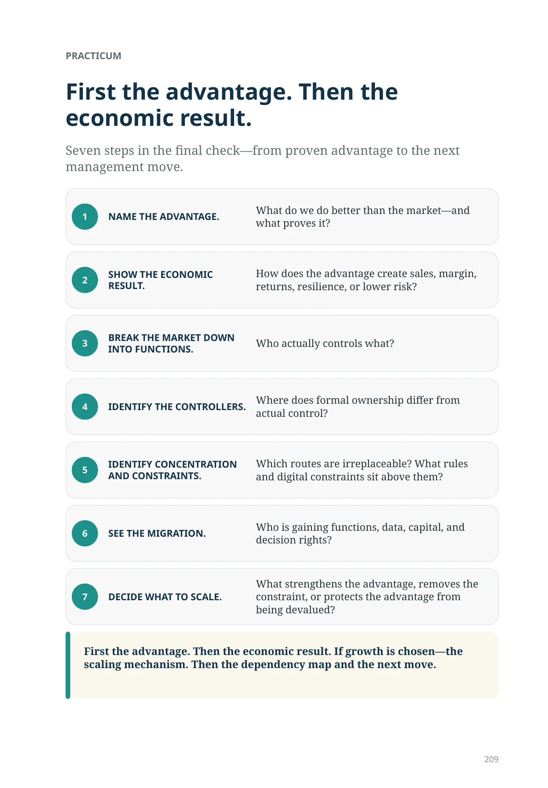
PRACTICUM
Where is your market now?
Diagnosis of competitive advantage, configuration of power, and the next strategic move
We have examined the pharmacy chain, distributor, manufacturer, IT infrastructure, and government. But none of these players is always and everywhere the strongest. In one market, power is concentrated among several pharmacy chains. In another, it belongs to a distributor that has built infrastructure around independent pharmacies. In a third, critical access is controlled by the government or a digital platform.
Market power often concentrates where a company controls something important to the system and difficult for other participants to replace.
1. What is our real competitive advantage? The difference must be visible not only inside the company, but also relative to the strongest alternative.
2. What measurable economic result does it create? Sales, margin, capital, resilience, risk, or customer outcomes.
3. Who or what can constrain this advantage? Rules, access, data, ownership, channel dependence, or the next migration of a function.
Only then does it make sense to choose the next strategic move. Three questions frame the entire practicum: advantage → result → constraint.
What could devalue all the company's other capabilities?
Executive Desk Check—IT and Government
We have already seen how a company gains advantages through availability, inventory turnover, automation, warehousing, purchasing power, assortment, scale, infrastructure, and patient access. But above them are constraints of another level.
| CONSTRAINT | CURRENT POSITION | NEXT DECISION |
|---|---|---|
| DATA CONTROL | Supplier decides / Exports available / Managed access layer | |
| INTEGRATION SPEED | Years / impossible / Manual projects / Standard connection | |
| TECHNOLOGY DIFFERENTIATION | Standard ERP/POS only / Specialized systems / Measurable advantage | |
| REGULATORY TRAJECTORY | Not tracked / Legal monitoring / Scenario-based strategy | |
| MARKET ACCESS DEPENDENCY | One mechanism / payer / Partly diversified / Multiple routes | |
| PROTECTION OF OWNERSHIP | Not assessed / Risk understood / Structure and contingency scenarios prepared |
Capability answers the question “what can we do?” Constraint asks, “will the environment allow us to turn that capability into power?”
The next question: what configuration of power exists here and now?
Competitive advantage must create a measurable economic result
Growth makes sense only when the advantage is proven and withstands scale.
A capability by itself is not yet a competitive advantage. If a competitor can do the same thing with a comparable result, it is a necessary level of play, not an advantage.
what we can do
better than the market
sales / margin / capital
removes the constraint
what breaks next
scaling
PRACTICUM
Two proofs of advantage—and a separate growth check
The three checks are best read separately: differentiation, economic result, and the capability to withstand the chosen scale.
- WE REALLY DO THIS BETTER THAN OUR COMPETITORS. Not an internal belief, but a measurable difference: higher availability, lower inventory at the same Service Level, faster replenishment, better purchasing terms, lower cost to serve, or faster technology implementation.
- THE ADVANTAGE CREATES A MEASURABLE RESULT. More sales, higher margin or return on capital, less capital and lower costs, higher customer retention, lower risk, or greater resilience.
- IF GROWTH IS CHOSEN—WILL THE ADVANTAGE WITHSTAND SCALE? The expansion mechanism must be clear: capital for new locations, margin for development, customer base, scaling speed, or reduced dependence on a single route.
WHAT NOT TO CONFUSE
- An advantage can be real even without growth. Growth is a separate strategic decision.
- If growth is chosen, the advantage must withstand scale: a manual service may disappear when the business doubles.
- If part of the advantage emerges only at scale, first test the basic unit economics and the mechanism for improving it.
Start by choosing three advantages
Do not fill in everything. Choose three differences that can genuinely change your company's economics.
Our advantage · Where are we better than the market? · What proves it? · Economic effect · How do you use it / what will change?
| Our advantage | Where are we better than the market? | What proves it? | Economic effect | How do you use it / what will change? |
|---|---|---|---|---|
WHERE DIFFERENT PARTICIPANTS SHOULD START
PHARMACY CHAIN
availability · inventory · assortment · scale
DISTRIBUTOR
service · capital · logistics · ecosystem
MANUFACTURER
market access · route to the patient · channel dependence
EVERYONE
data · integrations · regulation · control of functions
The advantage must produce a measurable economic result. Growth is one possible next move.
Three tests that are best viewed together
These questions are connected: high service without capital, a cash cycle without growth, and a broad assortment without customers do not create a sustainable advantage.
-
CHAIN / DISTRIBUTOR
Availability Level + inventoryWhat is our Availability Level—and that of the strongest competitor? How many days of inventory do we and they require at a comparable Service Level?
CHECK: lower inventory at the same or better Service Level = capital released for growth.
-
EVERYONE
Cash cycleLook beyond inventory turnover.
Own-financing days = days of inventory + days waiting for cash − supplier payment terms. MAIN QUESTION: if sales grow by 30%, how much additional working capital will be required?
-
CHAIN / DISTRIBUTOR
Assortment and customer patience timeWhat need can the customer meet immediately, within 2–4 hours, tomorrow, in 3–4 days, or in two weeks? Virtual assortment works only within the customer's time horizon.
CHECK: do more customers come to us because the market considers our assortment more reliable?
ONE COMMON QUESTION: does our operating model allow us to keep growing without a disproportionate increase in costs and capital?
Physical Product Flow Check
If you are considering robotics, do not start with an equipment catalog. Take one specific pharmacy or warehouse and answer these questions:
- How much expensive space is used today only because a person needs fast physical access to inventory?
- How much working time is spent searching, walking, receiving, sorting, put-away, and repetitive movements?
- What Availability Level do we have, and how many days of inventory are required to achieve it today?
- How would the required automation capacity change at 60, 50, 40, and 30 days of inventory without reducing availability?
- Can this inventory be reduced through more frequent replenishment or a centralized assortment?
- What will we do with the space and time released—in specific monetary terms or throughput capacity?
- What share of inbound flow comes from external suppliers and what share from our own distribution center, and how much control can actually be moved upstream in the chain?
If the robot does not remove a measurable constraint, the technology has not yet become a competitive advantage.
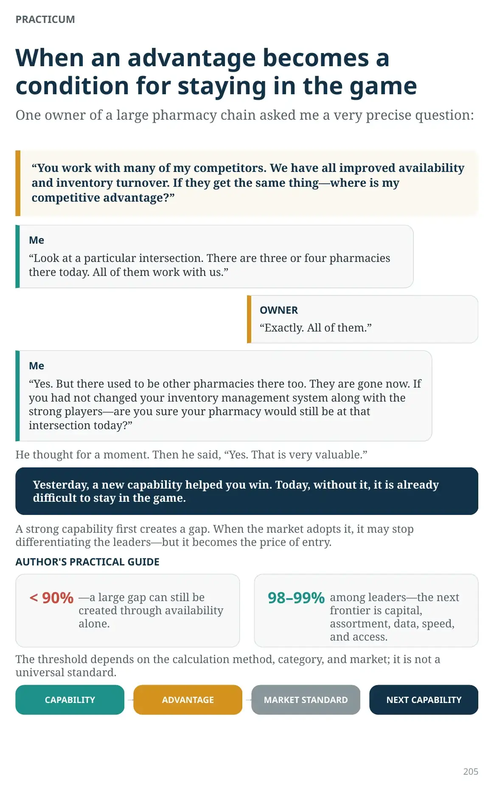
PRACTICUM
When an advantage becomes a condition for staying in the game
One owner of a large pharmacy chain asked me a very precise question:
“You work with many of my competitors. We have all improved availability and inventory turnover. If they get the same thing—where is my competitive advantage?”
Me
“Look at a particular intersection. There are three or four pharmacies there today. All of them work with us.”
“Exactly. All of them.”
Me
“Yes. But there used to be other pharmacies there too. They are gone now. If you had not changed your inventory management system along with the strong players—are you sure your pharmacy would still be at that intersection today?”
He thought for a moment. Then he said, “Yes. That is very valuable.”
Yesterday, a new capability helped you win. Today, without it, it is already difficult to stay in the game.
A strong capability first creates a gap. When the market adopts it, it may stop differentiating the leaders—but it becomes the price of entry.
< 90%—a large gap can still be created through availability alone.
98–99% among leaders—the next frontier is capital, assortment, data, speed, and access. The threshold depends on the calculation method, category, and market; it is not a universal standard.
CAPABILITY
- ADVANTAGE → MARKET STANDARD → NEXT CAPABILITY
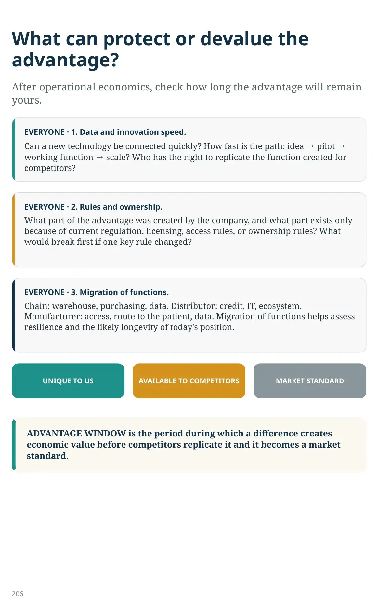
What can protect or devalue the advantage?
After operational economics, check how long the advantage will remain yours.
- EVERYONE · 1. Data and innovation speed. Can a new technology be connected quickly? How fast is the path: idea → pilot → working function → scale? Who has the right to replicate the function created for competitors?
- EVERYONE · 2. Rules and ownership. What part of the advantage was created by the company, and what part exists only because of current regulation, licensing, access rules, or ownership rules? What would break first if one key rule changed?
- EVERYONE · 3. Migration of functions. Chain: warehouse, purchasing, data. Distributor: credit, IT, ecosystem. Manufacturer: access, route to the patient, data. Migration of functions helps assess resilience and the likely longevity of today's position.
ADVANTAGE WINDOW is the period during which a difference creates economic value before competitors replicate it and it becomes a market standard.
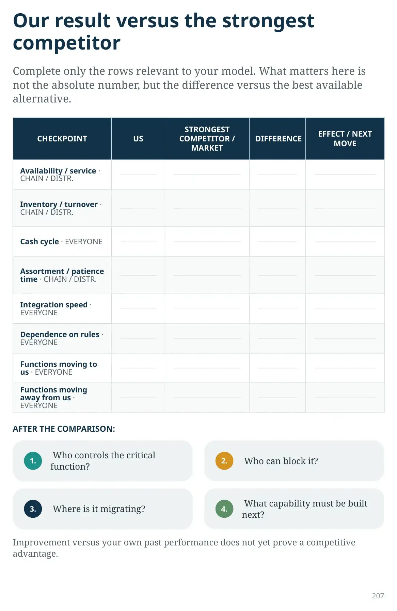
Our result versus the strongest competitor
Complete only the rows relevant to your model. What matters here is not the absolute number, but the difference versus the best available alternative.
CHECKPOINT · US · STRONGEST COMPETITOR / MARKET · DIFFERENCE · EFFECT / NEXT MOVE. Rows: availability / service; inventory / turnover; cash cycle; assortment / patience time; integration speed; dependence on rules; functions moving to us; functions moving away from us.
| CHECKPOINT | US | STRONGEST COMPETITOR / MARKET | DIFFERENCE | EFFECT / NEXT MOVE |
|---|---|---|---|---|
| Availability / service · CHAIN / DISTR. | ||||
| Inventory / turnover · CHAIN / DISTR. | ||||
| Cash cycle · EVERYONE | ||||
| Assortment / patience time · CHAIN / DISTR. | ||||
| Integration speed · EVERYONE | ||||
| Dependence on rules · EVERYONE | ||||
| Functions moving to us · EVERYONE | ||||
| Functions moving away from us · EVERYONE |
AFTER THE COMPARISON: 1. Who controls the critical function? 2. Who can block it? 3. Where is it migrating? 4. What capability must be built next? Improvement versus your own past performance does not yet prove a competitive advantage.
PRACTICUM
Where does power lie in this market specifically?
Find the configuration that best describes the current system—and the dependency that will change the economics of the next decision.
- FRAGMENTED RETAIL / STRONG DISTRIBUTOR. Power: warehouse, speed, credit, ERP/POS, pharmacy alliance. Can the distributor retain the ecosystem?
- CONSOLIDATING CHAINS. Power: own warehouse, direct purchasing, analytics, customer traffic. How can they scale without weakening their economics?
- VERTICALLY INTEGRATED GROUP. Power: retail + distribution + sometimes manufacturing. Which critical function is still outside its control?
- GOVERNMENT-CONSTRAINED MARKET. Power: ownership, licensing, regulation, mandatory access. What changes if one key rule changes?
- DIGITALLY CLOSED MARKET. Power: the ERP/POS platform controls data and integration. Who actually controls technology choices?
- TRANSITIONAL CONTEST MARKET. Functions are actively migrating and stable dominance has not yet emerged. Which function must be captured before the market stabilizes?
Do not classify the market for the sake of an elegant framework. Find the dependency that will change the economics of the next decision.
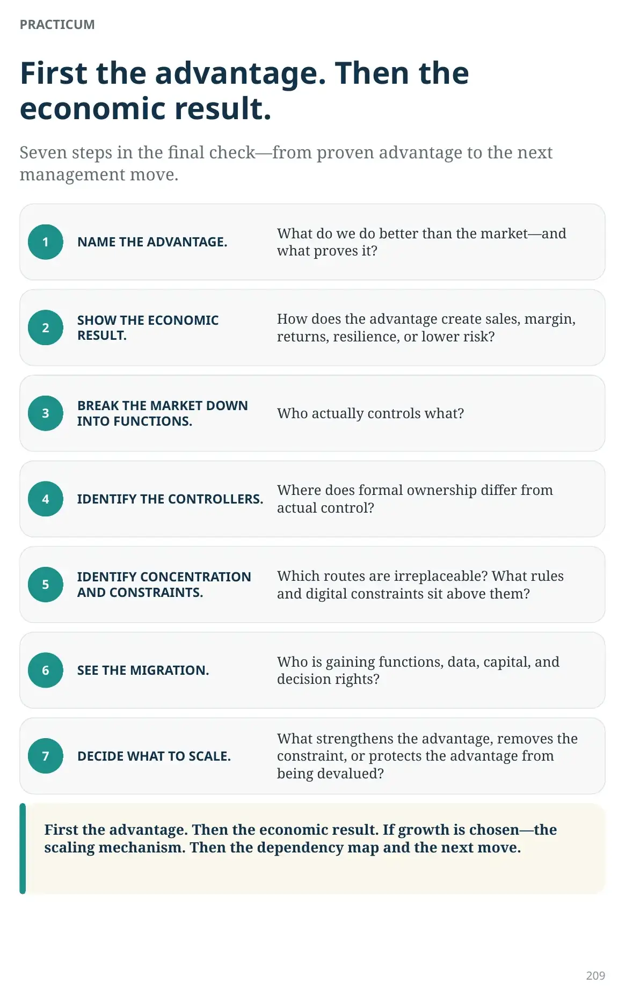
PRACTICUM
First the advantage. Then the economic result.
Seven steps in the final check—from proven advantage to the next management move.
- NAME THE ADVANTAGE. What do we do better than the market—and what proves it?
- SHOW THE ECONOMIC RESULT. How does the advantage create sales, margin, returns, resilience, or lower risk?
- BREAK THE MARKET DOWN INTO FUNCTIONS. Who actually controls what?
- IDENTIFY THE CONTROLLERS. Where does formal ownership differ from actual control?
- IDENTIFY CONCENTRATION AND CONSTRAINTS. Which routes are irreplaceable? What rules and digital constraints sit above them?
- SEE THE MIGRATION. Who is gaining functions, data, capital, and decision rights?
- DECIDE WHAT TO SCALE. What strengthens the advantage, removes the constraint, or protects the advantage from being devalued?
First the advantage. Then the economic result. If growth is chosen—the scaling mechanism. Then the dependency map and the next move.